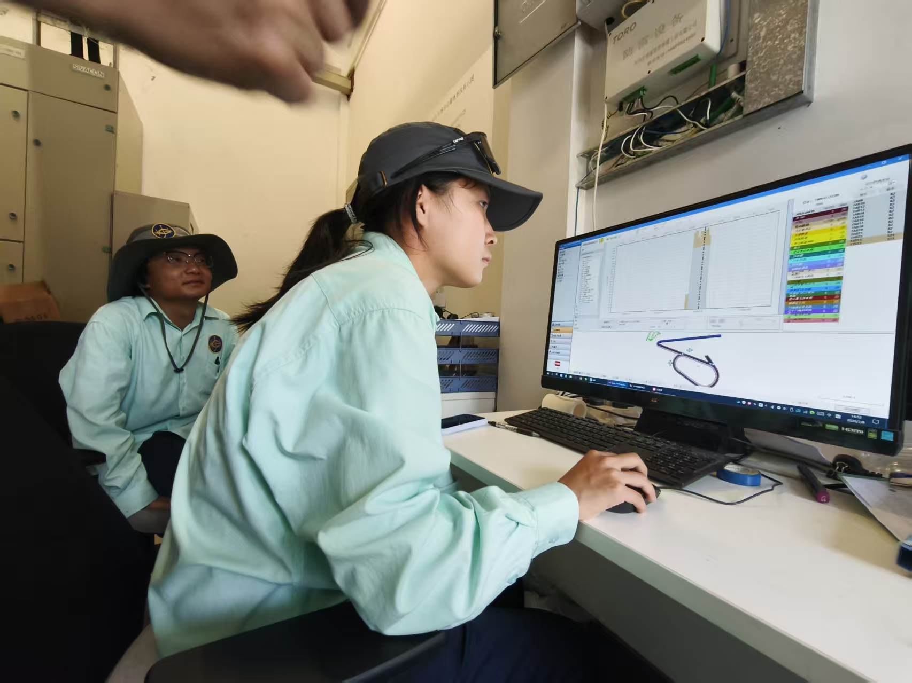
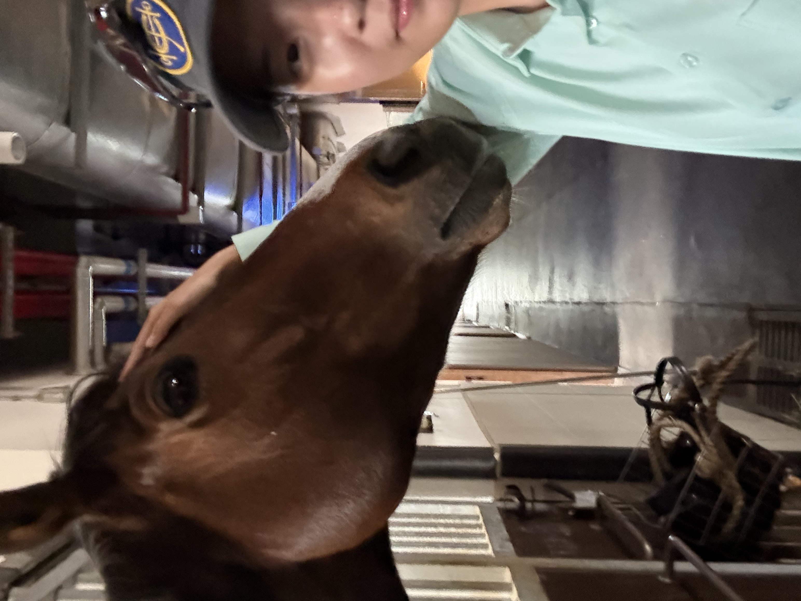
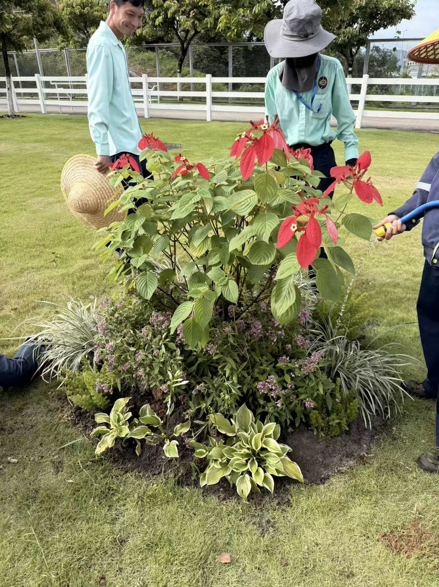
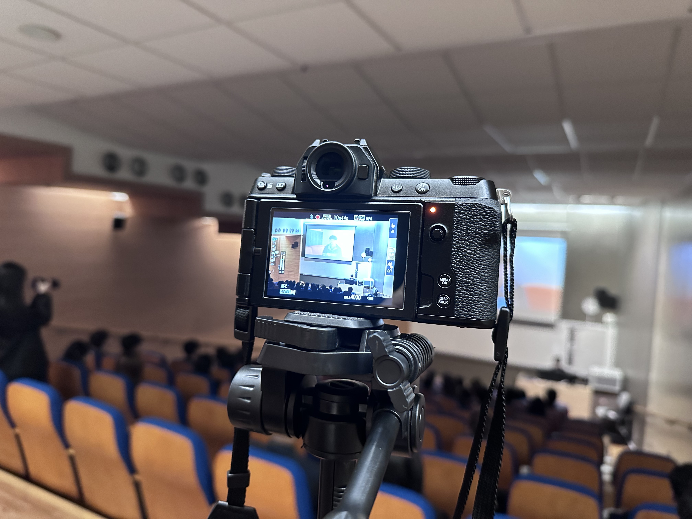
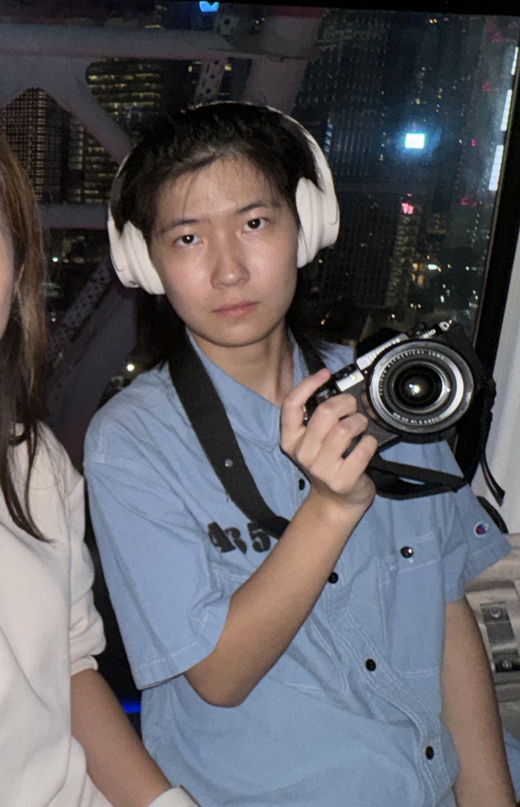

Finance & Banking · The Hang Seng University of Hong Kong
金融及银行学 · 香港恒生大学
关于我
I am Chen Xinru (Zoe), a Year 3 student majoring in Finance and Banking at The Hang Seng University of Hong Kong.
我是陈欣茹（Zoe），香港恒生大学金融及银行学大三学生。
My studies have given me a solid foundation in financial principles, banking operations, and analytical thinking. However, I have always believed that real growth happens when knowledge meets practice. This is why I actively look for opportunities to step outside the classroom.
我的专业学习为我打下了金融原理、银行业务和分析思维的基础。但我始终相信，真正的成长发生在知识与实践相遇的时候。因此我积极寻找走出教室的机会。
In the summer of 2026, I completed my first internship as an Intern Racecourse Manager at the Hong Kong Jockey Club Conghua Racecourse. The experience allowed me to work closely with daily operations, coordinate across teams, and see how management decisions play out in a real working environment.
2026年暑假，我在香港赛马会从化马场完成了人生第一次实习，担任实习马场经理。这段经历让我近距离参与日常运营、跨团队协调，并亲眼看到管理决策如何在真实工作场景中落地。
It helped me gain not only practical skills, but also a clearer sense of the kind of professional I want to become — someone who can bridge theory and real-world application.
它不仅让我收获了实操能力，也让我更清楚自己想成为什么样的人——一个能够把理论与实际应用连接起来的人。


实习经历
Hong Kong Jockey Club Conghua Racecourse
香港赛马会从化马场
Key Responsibilities:
Key Takeaway:
Frontline work gave me practical experience that classroom learning could not provide — how to coordinate multiple parties, solve problems in real situations, and turn ideas into action.
前线工作给了我课堂无法提供的实操经验——如何在真实场景中协调多方、解决问题、把想法落地。
实习接近尾声时，园林组组长让我们在马场一角自主设计并完成一小块园艺。我们为它起名为「Last Dance」。那块小小的绿地，成为了我这段实习最温柔也最难忘的句点。

“Last Dance” — the small garden we designed
「Last Dance」—— 我们亲手设计的小园艺
实习项目
园林组任务安排与人员管理
Designed different work schedules for the landscape team in the morning and afternoon. Managed personnel allocation and estimated working hours to improve daily operational efficiency.
草地打孔机检查与维护监督
Regularly inspected the solid and hollow tines of the grass aerator for wear or looseness. Supervised timely replacement to ensure equipment safety and consistent turf quality.
草地组小型团建活动策划
Planned the specific content of a small internal team-building activity for the grass team, including activity flow, games, and materials, to strengthen team cohesion.
技能
财务分析
Comfortable working with financial data, interpreting statements, and supporting basic analysis tasks.
沟通协调
Able to communicate clearly across teams and coordinate tasks effectively in fast-paced environments.
团队管理
Experience supporting team workflow, distributing tasks, and helping maintain smooth collaboration.
普通话
Fluent in Mandarin for both professional communication and daily interaction.
兴趣爱好
旅游
I enjoy exploring new places, experiencing different cultures, and observing how people live in various environments.

摄影
I like capturing moments — whether it’s landscapes, daily life, or small details that often go unnoticed.

听音乐
Music is my way to relax and stay focused. I listen to a wide range of genres depending on my mood and tasks.
联系我
Feel free to reach out via email
s246910@hsu.edu.hk